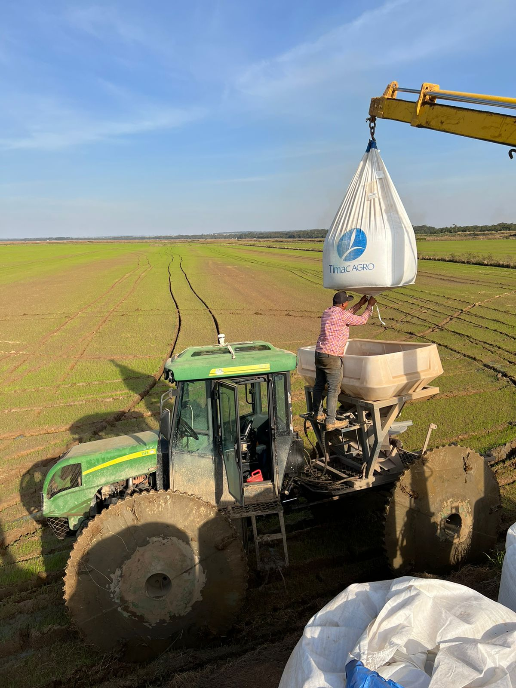
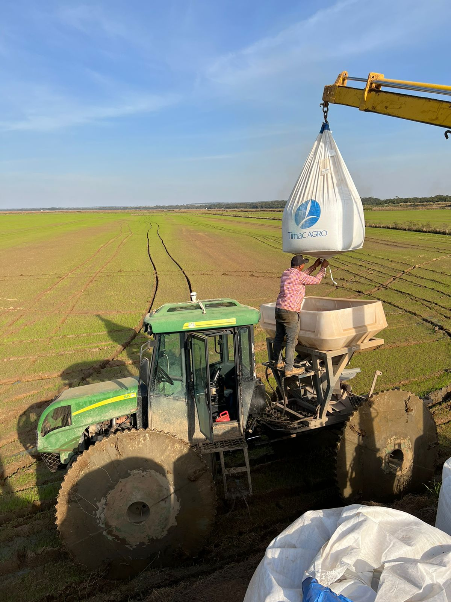

Arroz em São José
A agricultura de grãos é riquíssima como o arroz,cultivada pela familia Ramilde, por Jose Neide Ramilde,Anamelia Ramilde, Olivia Ramilde,localizado na fazenda Volta Grande, toda familia unida plantam 500 hectare de arroz, podemos ver um pouco desse manejo,nas fotos cedidas pelo filho do agricultor José Neide Ramilde, seu filho Otavio Ramilde e seu primo Ady Ramilde mostram a realidade e desafios do dia a dia no cultivo desse cereal no instagram, e a espera da produtividade é em média de 300 a 320 sacos por alqueire. A confiança é boa relata o filho Otávio Ramilde...'Sempre vi meu pai trabalhando e cresci no meio de tudo isso, e fui gostando, pegando amor e acho essa profissão muito gratificante por produzir alimento para muitas pessoas'. .
A seguir você encontra algumas fotos fornecidas por nossos colaboradores;


 
